近战武器 · 正式美术
3 张 48×48 图标；15 张三向持刀动画条，64×64 单帧，身体约 28px、脚底固定，左向镜像。前两帧前摇，后两帧命中与恢复；实际判定由状态机驱动。
提示词与原稿 · 装备清单 · 游戏
melee01

透明图标 · 无稀有度底色
melee02

透明图标 · 无稀有度底色
melee03

透明图标 · 无稀有度底色
持刀动作
idle · e
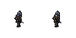
2 帧 · 64×64 · 原稿idle · n
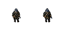
2 帧 · 64×64 · 原稿idle · s
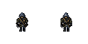
2 帧 · 64×64 · 原稿melee01 · e
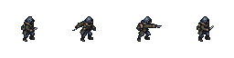
4 帧 · 64×64 · 原稿melee01 · n
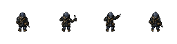
4 帧 · 64×64 · 原稿melee01 · s
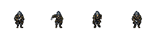
4 帧 · 64×64 · 原稿melee02 · e
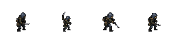
4 帧 · 64×64 · 原稿melee02 · n
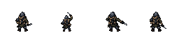
4 帧 · 64×64 · 原稿melee02 · s
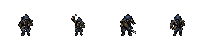
4 帧 · 64×64 · 原稿melee03 · e
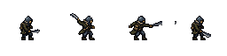
4 帧 · 64×64 · 原稿melee03 · n
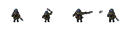
4 帧 · 64×64 · 原稿melee03 · s
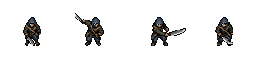
4 帧 · 64×64 · 原稿walk · e
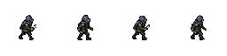
4 帧 · 64×64 · 原稿walk · n
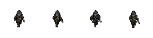
4 帧 · 64×64 · 原稿walk · s
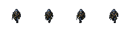
4 帧 · 64×64 · 原稿